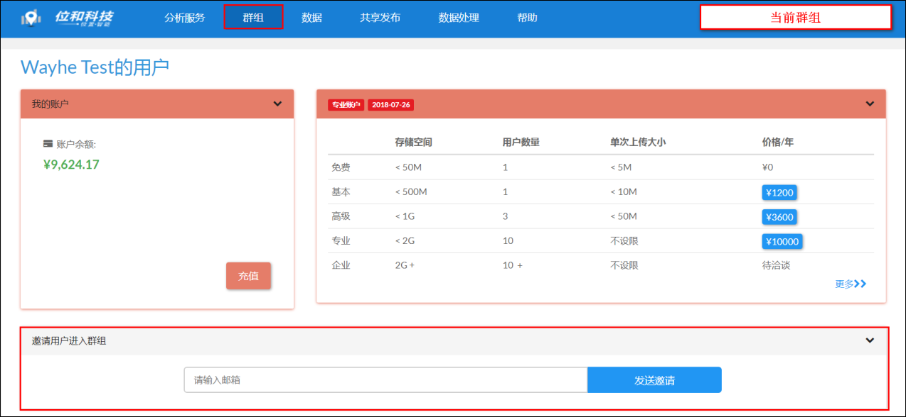

开始
数据
“位和数据共享”页面目前省、市、区县的行政点和行政边界数据、乡镇点数据、水系数据等基础地理信息，可在平台上使用或下载。
工具箱
平台目前支持的模型计算功能包括空间聚合、时空聚合、关联、数据过滤、格网化、字段计算、地理编码、生成等距离缓冲区、生成等时圈、距离矩阵等。
数据挖掘分析
平台支持可视数据（地理可视化）、多维数据分析、多维时空分析、多维属性特征自动分区、流分区、多维流分析、分区优化与选址评估等数据计算和分析云服务。
上传新数据
如果您是账户管理员，请到数据（Data）页面上传数据，然后把数据加载给所选定的分析服务；之后就可以启动（Launch)服务进行分析。
也可以不上传自己的数据，直接加载平台上共享的数据给选定的分析服务。
标准用户可以上传数据，但是不可以配置服务。细节请参考用户文档。各个数据分析服务的用户文档链接见页面帮助栏。
数据格式
- 平台目前支持上传的数据格式为Shapefile、geojson、带有经纬度的csv和不带有经纬度的csv文件。
- 上传Shapefile请把Shapefile所有文件（不带目录）打包为zip文件。
- 上传geojson文件，请确认geojson文件中仅含有点、线或面要素中的一种。
- 平台支持国测局坐标（火星坐标）和国际通用坐标；如数据为百度坐标或中国地方坐标，请自行做相应的坐标转换后再上传。
- 对百度坐标和未知参数坐标的支持即将上线。
- 上传带有经纬度的csv请确定每一条记录的经纬度不为空，并且经度和纬度分为两个属性。
中文编码
位和平台中的数据均使用的是UTF-8编码。用户可在上传数据时根据平台提示修改编码，也可以利用第三方工具进行转码后再进行数据上传。
LibreOffice或Notepad++可用户转换CSV文件的编码；QGIS可用户转换空间数据的编码。
支付和发票
① 账户充值可通过微信、支付宝在线方式支付，也可以通过合同方式支付。
② 支付3000元以上可开具发票，请以“位和GeoAI云平台发票”为标题发邮件至info@wayhe.com，邮件里请列出发票抬头，纳税识别号，位和平台账户邮箱和消费明细。
③ 账户余额不支持退款，有效期自充值日起至用完即止，若有其它疑问，请联系info@wayhe.com。
其他
- 免费用户的数据在平台内共享，其它用户可以访问，但不能下载。如需私有数据空间（不允许其它用户访问数据），请升级账户。
- 平台支持多用户群组账户。同一群组的用户共享群组内的数据。免费账户不支持多用户。如需多用户群组功能，请升级账户。
- 本平台为定量数据分析平台，所以上传的数据请至少带有一个数值类型的属性。
账户常见问题
1、什么是用户？
答：用户是关于个人的唯一标识，每个注册邮箱被称为是一个用户。
2、什么是账户（群组）？
答：（1）账户是多个用户的组织，又称群组，每个账户至少包含一个用户。
（2）账户与用户高度关联，用户注册时，平台会自动为该用户创建一个免费账户。免费账户仅包含创建者本身，不能邀请其它成员加入。
（3）一个用户只能创建一个账户，但可以同时受邀加入多个账户（群组），各账户（群组）相互独立。在不同的群组承担不同的用户角色。
3、有哪些账户（群组）类型？分别享有怎样的权限？
答：我们根据不同需要提供五种账户类型：免费账户、基本账户、高级账户、专业账户、企业账户。账户等级越高，可加入账户（群组）的人数越多，同时，享有的权限和服务也越多。详情请访问订购计划。
4、如何升级账户？
答：您可以点击主菜单“账户”，访问账户界面，点击不同账户对应的价格自主升级账户，也可访问订购计划自主升级您的账户；或者与我们联系info@wayhe.com。
5、账户（群组）内有哪些用户角色？
答：账户（群组）内用户分为管理员、标准用户和受限用户三种类型：
（1）管理员即账户（群组）的创建者，拥有群组的最高权限，可邀请其他用户加入群组，也可移除群组内其他用户，目前不支持群组内用户自主退出群组；
（2）标准用户和受限用户是受邀加入群组的其他已在平台完成注册的用户；
（3）群组内只有管理员和标准用户可以操作数据，主要包括：上传数据、购买数据、删除数据、配置数据、修改数据参数等，其中，仅管理员可以下载数据。
（4）受限用户可以通过“分析服务”页面各服务下的数据列表启动对应的分析服务，当管理员对一份数据进行配置之后该数据会自动添加至配置服务列表下。
6、如何向账户（群组）添加用户？
答：以添加用户注册邮箱的方式邀请其他用户加入群组，进入账户（群组）页面，在“邀请用户进入群组”模块添加用户注册邮箱，点击“发送邀请”即可。在“群组用户”列表修改群组中其他加入用户的类型。

数据管理与配置
| 选择屏幕顶端菜单栏的"数据"选项切换到数据界面（只有管理员用户及标准用户可以查看）。数据管理界面可以管理用户群组中已有数据（“我的数据”）、向用户群组中添加数据（“添加新数据”）或从位和平台获取数据（“基础地理数据”、“城市兴趣点”、“房产数据”、“人口流动数据”、“年鉴统计数据”）。 |
我的数据
“我的数据”为用户群组中现有数据列表，上传到平台、通过平台获取或通过模型计算生成的数据都会保存在“我的数据”中，包含“空间数据”和“属性数据”。在该界面可以对数据进行搜索、查看、管理、分享、下载、删除，也可以将数据配置到分析服务工具中。
详情请参考数据列表说明文档。

编辑数据描述
在“我的数据”界面，点击任意一条数据下面的编辑数据描述可进入该条数据的数据详情页面。

在数据描述界面可以看到数据的基本属性，点击“编辑”可以对属性进行修改，包括修改数据名称、修改文件的描述，以及修改数据标签，若需要添加新标签，可以点击编辑标签按钮打开标签编辑页面，在标签库中先添加新标签。编辑修改完成后，需要点击“保存”按钮将所做的修改保存。
标签设置
点击界面的“标签”，可以查看已有标签，选择特定标签，可筛选出标记了该标签的文件。给数据附上特定标签后，可以更有条理地管理数据，标签的内容可以根据自己的需要任意设定，如根据数据的类型设置不同标签、根据数据所在的城市区域设置不同标签等等，还可以根据数据所属的项目、数据所属的研究部门等设置不同的标签。
标签的自定义设置有两种方法，一种是在“我的数据”界面点击标签后，点击“编辑”，可打开标签编辑界面，可以看到目前已有的标签，可以对现有标签进行修改或删除，也能向现有标签库中添加新标签。点击“编辑”按钮可以对某一标签的名称和颜色进行修改，点击“添加”按钮可以添加新标签。另一种标签设置方法是在数据的详情界面设置。

配置分析服务
在“我的数据”界面，点击任意一条空间数据下面的配置分析服务可进入该条数据的配置分析服务页面。在分析服务页面，显示了用户所订阅了的分析服务，一般情况下，只有已订购的分析服务会显示在此处，若客户订购了人口流动数据，则选择平台上获取的人口流动数据时，也会显示有“基础流分析”服务，但只能启动查看流数据，不能对数据进行配置。在位和平台上进行各类分析时，需要在此处对数据进行相应配置再启动分析。
背景图层配置
所有的分析服务中都可以对“背景图层”进行设置，为待分析的数据添加其他多个数据作为背景图层，以便于分析。
- 在“背景图层”栏点击“配置”，进入配置背景图层页面。配置背景图层界面提供了一个可选数据列表，群组账户中的所有数据都可以被添加为背景图层。勾选所需要作为背景图层的文件后，在上方“选择的背景图层中”会显示已选择的文件名称，确认无误后点击保存，即为文件添加了背景图层。


- 添加背景图层后，“背景图层”栏将显示已添加的图层，鼠标左键长安某一图层可拖动该图层调整在表格中的位置，以改变图层显示时的上下关系。点击图层样式编辑按钮，可打开图层样式编辑面板，在该面板可修改背景图层的显示样式。调整完背景图层顺序及修改完显示样式后，点击“保存图层顺序”将所做的修改保存。


流配置
使用基础流分析、空间交互扫描统计、流分区等分析服务时，要先对流数据进行配置。
- 勾选相应的服务后，在CSV resources一栏配置流数据。流数据为含有起点-终点（origin-destination）的csv数据表。在平台上获取的人口流动数据已自动将csv文件匹配到了空间单元文件上，若需要自行设置关联流文件可点击“设定”选择流文件。

- 在流文件选择界面，选择对应的可用于流分析的csv文件后点击“保存”回到流文件配置栏。

- 在“特征ID字段”处选择CSV文件中origin及destination所对应的空间单元文件字段。如人口流动CSV文件中，origin及destination为每个城市的名称，因此特征ID字段应该也选择每个空间单元的表征名称的字段，即Name。若origin及destination是每个城市的ID，则特征ID字段也应选择表征城市ID的字段。
- 若空间单元文件中包含每个空间单元人口信息，可以在“人口字段”处选择人口信息对应字段。设置完成后，需要点击“保存”将所做的设置保存，平台会自动检测所选字段是否匹配，若无法匹配将给出提示。匹配成功后，可以点击“启动”以启动相应分析服务。

时空分析配置
在使用“多因子时空分析”服务时，需要为空间文件配置相应的多时段属性文件。
- 勾选服务后，在CSV resources一栏配置数据。多时段属性文件数据为包含不同时间的各空间单元属性值的csv文件。在平台上获得的时空聚合数据已自动将csv文件匹配到了空间单元文件上，若需要自行设置关联文件可点击“设定”选择文件。
- 选择相应CSV文件后，在文件配置栏对该文件进行配置，在特征ID字段，选取csv文件第一列所对应的空间单元文件的字段，如csv文件第一列为各个空间单元的FID，则在特征ID字段处也要选择FID。
- 选择好相应文件和字段后，点击“保存”将所做的修改保存，此时系统将字段检测字段是否匹配，若无法匹配将给出提示。匹配成功后，可以点击“启动”以启动相应分析服务。

分区优化配置
在使用分优化服务时，需要对优化因素和已有边界等进行配置。
- 在数据详情界面勾选该服务后，在主要优化因素下拉菜单中选择用于进行分区优化的属性的字段名，选择后点击“保存”。若存在已有边界文件，在已有边界处选择已有边界文件输入，并点击“保存”。最后点击“启动”，进入分区优化服务功能界面。

分区优化(站点)配置
在使用分优化（站点）服务时，需要对优化因素、已有站点、容量属性和已有边界等进行配置。
- 在数据详情界面勾选该服务后，在“站点”处点击下拉菜单选择已有站点的空间文件，在“主要优化因素”下拉菜单中选择用于进行分区优化的属性的字段名，在“容量属性”下拉菜单中选择站点的容量属性字段。选择后点击“保存”，将所做的设置确认保存。已有边界处的设置与分区优化中已有边界设置相同。

添加新数据
在“添加新数据”界面可以上传已有的shapefile文件、geojson文件或csv文件到用户群组的数据库中，也可以添加esri map service背景图层。只有管理员用户和标准用户可以添加数据。

上传shapefile文件
① 点击“点击上传，或将文件拖至此处”并选择计算机中指定格式的shapefile文件。
② 填写数据名称，上传数据不能与已有数据重名，系统会默认填写数据名称为上传shapefile文件名，若检测到已存在重名文件时会要求修改数据名称。
③ 检查编码，若上传数据预览界面出现乱码，说明文件不是UTF-8编码，请选择正确的编码。
④ 根据数据的坐标投影判断是否勾选相应选项，点击上传，将文件上传到平台上。
上传CSV文件
①点击“上传数据”按钮，打开上传文件对话框。
②点击上传，并浏览计算机选择目标csv文件。
③填写数据名称，上传数据不能与已有数据重名，系统会默认填写数据名称为上传csv文件名，若检测到已存在重名文件时时会要求修改数据名称。
④ 点击“上传”上传文件。
⑤ 对于带有地理位置信息的文件，上传后的文件需要指定对应的经纬度字段名称，点击提交后，上传的csv文件将根据其经纬度坐标生成shapefile文件。
上传Geojson文件
① 点击“上传数据”按钮，打开上传文件对话框。基本操作与上传shp文件类似。
② 点击上传，并浏览计算机选择目标Geojson文件。
③ 填写数据名称，上传数据不能与已有数据重名，系统会默认填写数据名称为上传Geojson文件名，若检测到已存在重名文件时时会要求修改数据名称。
④ 根据数据的坐标投影判断是否勾选相应选项，点击上传，将文件上传到平台上。
从ESRI Map Service添加数据
① 点击“ESRI”按钮切换到添加ESRI数据界面。
② 为添加的数据设置名称。
③ 填写Public Map Service的链接，确认图层ID包含在service url里，点击“添加”按钮，添加图层。

修改文件编码
空间文件转UTF-8编码格式
目前位和平台中文属性仅支持UTF-8编码，如果SHP为其它编码，用户可在数据上传预览界面修改编码格式，也可以使用第三方工具将编码转换为UTF-8后再进行上传操作。推荐使用QGIS，本帮助也将以QGIS为例。 您也可以自主选择其它支持转码的工具。
步骤一：在QGIS打开空间文件
运行QGIS，在文件目录找到需要转码的SHP或geojson文件，拖动至工作界面（如图）。

①文件目录：与电脑文件存储位置对应，无类似ArcGIS添加文件夹链接操作
②内容列表：与ArcGIS类似，按顺序显示添加图层，可调整图层优先显示情况
③地图窗口：显示空间文件
步骤二：查看当前是否为正确编码
在对应图层右键选择Open Attribute Table，打开属性表，查看中文属性是否显示正常
若中文属性显示乱码，需修改当前编码格式
若属性显示正常，请直接看步骤三

步骤三：文件另存为UTF-8编码格式
中文属性显示正常，将文件另存为UTF-8编码格式
在图层右键选择Save As…，打开另存为设置框：
①设置保存路径
②确保另存编码格式为UTF-8，下拉选择
点击确定，完成转码。新文件即为UTF-8编码格式。可打开属性表查看中文属性，也可在Properties查看新文件编码格式。

属性文件转UTF-8编码格式
目前位和平台中文属性仅支持UTF-8编码，如果CSV为其它编码，用户可在数据上传预览界面修改编码格式，也可以使用第三方工具将编码转换为UTF-8后再进行上传操作。推荐使用Notepad++，本帮助文档也将以Notepad++为例。您也可以自主选择其它支持转码的工具。
步骤一：在Notepad++打开CSV文件
找到需上传的CSV文件，右键选择打开方式，选择Notepad++，或者直接点击Edit with Notepad++，即用Notepad++打开CSV文件。（如图）。

步骤二：文件另存为UTF-8编码格式
点击“格式”，选择“转为UTF-8无BOM编码格式”即将该CSV文件编码格式转为UTF-8编码。
操作完成，点击保存。之后便可上传将CSV文件作为空间文件或非空间文件上传至您的账户。

空间文件中.csv文件的意义
SHP文件中的.dbf属性表对中文有限制，不能完整有效的为各属性添加字段名称。为了更完整的显示字段属性，我们特意向空间文件中添加.csv文件解决这个问题。当上传的空间文件中同时存在.dbf文件和.csv文件时，系统将优先识别.csv文件。
注意：csv文件名称需与SHP文件名称一致，且将csv文件与.shp、.prj等SHP文件压缩至同一个压缩包内。

共享与发布管理
共享与发布列表
- 在“共享发布”页面，可以对已共享的数据进行管理。共享与发布列表里显示所有用户保存已共享的数据的信息。用户可对共享与发布信息进行编辑，如添加描述、删除某共享与发布信息等。
- 数据共享有两种形式，一是发布HTML5链接，可以供任何人在其他任意设备上查看分享后的地图，另一种是嵌入脚本代码，可以将分享的地图嵌入到其他web工程中。 点击"链接" 获得可用于分享的网页链接。点击 "嵌入" 获得控件嵌入网页中所需要的代码。


域名控制
- 嵌入发布内容时必须在此设置需要嵌入平台的域名，否则将无法正常嵌入。
- 点击”嵌入“按钮，显示需要嵌入发布内容的代码信息。复制此代码即可在需要嵌入的平台嵌入发布的内容。